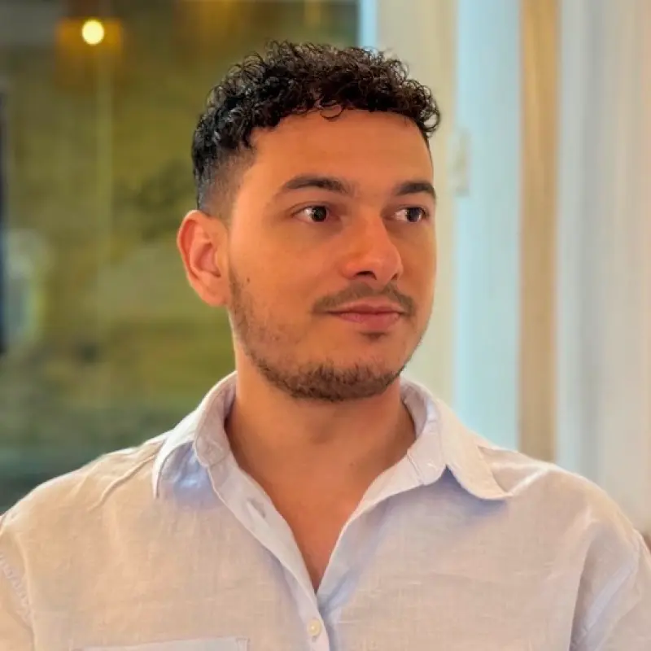
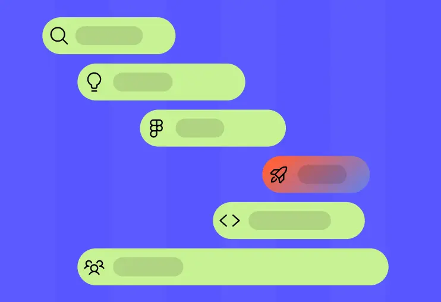
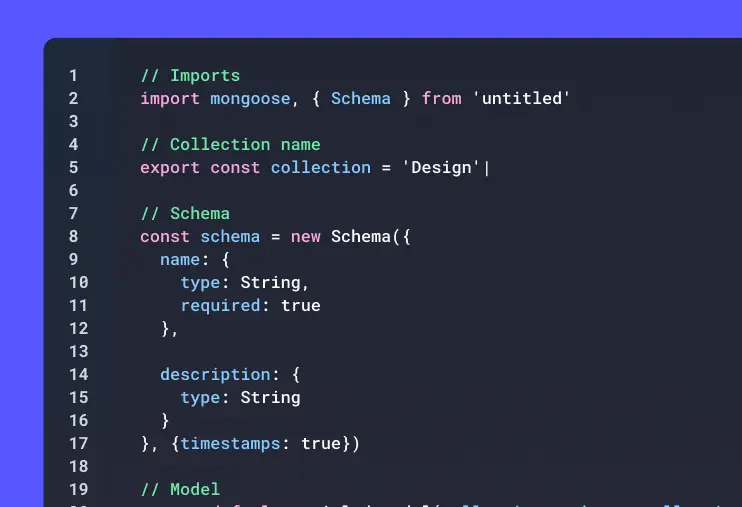
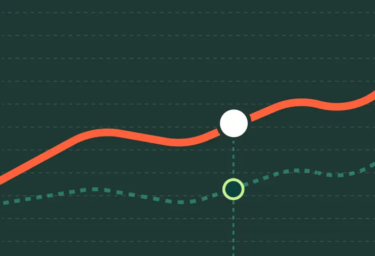

Visitas que no preguntan
Tu sitio recibe tráfico y aun así nadie escribe. Se ve, pero no genera una sola conversación.

Diseño y construyo páginas web y tiendas online para que tu negocio se vea profesional y crezca.
No es falta de presencia. Es lo que pasa después de que alguien entra: no encuentra qué hacer, no confía, o se topa con un paso de más.
Tu sitio recibe tráfico y aun así nadie escribe. Se ve, pero no genera una sola conversación.
La tienda tiene visitas, pero el proceso confunde y el pedido se cae en el último paso.
Cambiar un precio o una foto pasa por otra persona, y los pedidos siguen copiándose a mano.
Al lado de la competencia tu sitio no transmite seriedad, y esa duda frena la decisión de compra.
Desde una landing para validar una idea hasta una tienda online lista para vender.
Cada proyecto comienza entendiendo qué necesita lograr tu negocio. A partir de ahí definimos una solución digital con un alcance claro, una experiencia coherente y una ruta real hacia el lanzamiento.

Diseño y construyo páginas web y tiendas online claras, rápidas y pensadas para hacer crecer tu negocio.

Transformo procesos e ideas en aplicaciones web y mobile listas para usar.

Conecto tus herramientas y automatizo tareas para que tu equipo ahorre tiempo y trabaje mejor.
De un problema concreto a un sitio que ya está funcionando.
Una selección de proyectos con su alcance real: qué se construyó, en cuántas páginas y qué cambió al publicarlo.
Landing de presentación estructurada en beneficios, comunidad y testimonios, para convertir visitantes en usuarios de la pre-lista.
Sitio de presentación para un software de gestión: diez módulos técnicos explicados con claridad para dueños sin perfil técnico.
Landing de una sola página para una red de domicilios: un flujo de tres pasos que explica el servicio sin descargar una app.
Sitio completo para una agencia de marketing en Medellín: landing, páginas de servicio y un proceso de growth documentado en seis etapas.
Un proceso que entrega resultados, no solo archivos.
Cada proyecto pasa por etapas claras para definir el problema, diseñar la experiencia, construir la solución y dejarla lista para crecer.
Entiendo tu negocio, tus usuarios y el problema que quieres resolver. Reviso objetivos, procesos actuales, oportunidades y restricciones técnicas.
Organizo la solución antes de construirla. Defino funcionalidades, flujos, arquitectura de información y prioridades para que el proyecto tenga una dirección clara.
Creo una experiencia clara y consistente para web, mobile o tienda online. Diseño las pantallas, componentes y estados necesarios para validar cómo funcionará.
Desarrollo la solución y la convierto en un producto funcional. Después conecto herramientas, automatizo tareas repetitivas y priorizo mejoras.
Depende del alcance: no es lo mismo una landing de una página que una tienda con catálogo y checkout. Después de la primera conversación recibes una cifra cerrada y un alcance por escrito, para que no aparezcan sorpresas a mitad del camino.
Depende del alcance y de qué tan rápido lleguen los contenidos: textos, fotos y accesos suelen ser lo que más retrasa un proyecto. En la propuesta va una fecha de entrega concreta, no un estimado vago.
Sí. El dominio, el hosting y el sitio quedan en cuentas tuyas y con tus accesos. No trabajo con sitios alquilados ni te dejo dependiendo de mí para entrar a tu propio proyecto.
El diseño se revisa por etapas, no al final. Ves la estructura antes que las pantallas, y las pantallas antes del desarrollo, así que los cambios se hacen cuando todavía son baratos.
Sí. El sitio se entrega con el contenido editable desde el administrador, y con una guía para cambiar textos, fotos y precios sin tocar código.
Landings para validar una idea, sitios corporativos de varias páginas, rediseños de un sitio que ya existe y tiendas online. Cuando el proyecto necesita una aplicación web o mobile, lo trabajo con un equipo especializado.